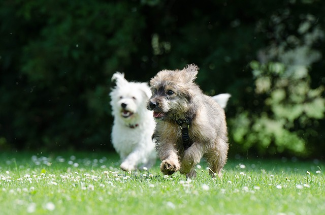
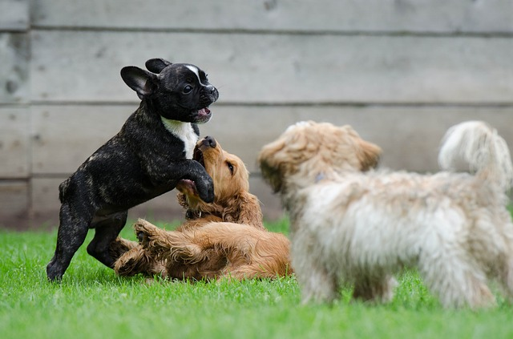

The Dog Owner Meeting App
Paw Pals is a social media app, but for dogs. Our goal is to help dog owners find and connect with other dog owners in the area. Because dog owners often desire to find other dogs for their pet to socialize with, the PawPals app provides an easy way to do so.

